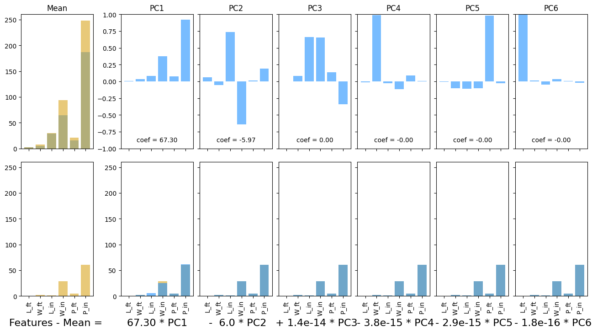
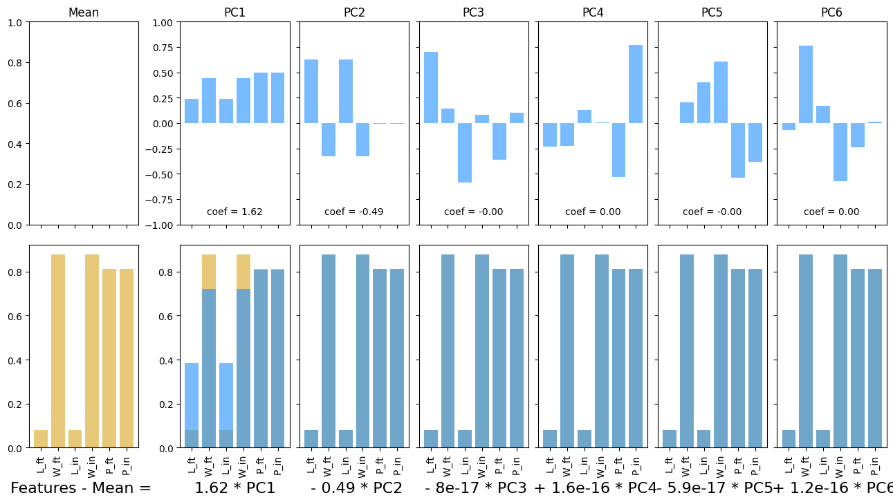
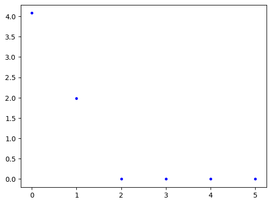

PCA: Examples and Observations#
Principle Component Analysis (PCA) is one of the more complex concepts in data science. In this notebook, we look at some examples and make some general observations as to the (beneficial) effects and uses of PCA.
Working through the examples, observe:
Features that vary together appear in the same Principle Components. As a result, PCA solves the co-linearity problem.
You can approximately reconstruct the original feature values with fewer than all the PCs.
import numpy as np
import pandas as pd
import matplotlib.pyplot as plt
from sklearn.decomposition import PCA
from sklearn.preprocessing import StandardScaler
Show code cell content
def plotPCA(data, pca=None, num_components = None, idx = 0, feature_names = None):
if pca is None:
if num_components is None:
pca = PCA()
else:
pca = PCA(n_components = num_components)
X = pca.fit_transform(data)
if num_components is None:
num_components = pca.n_components_
if isinstance(data, pd.DataFrame):
x0 = data.iloc[idx,:]
else:
x0 = data[idx,:]
x_pca = np.zeros_like(x0)
coeffs = X[idx,:]
if feature_names is None:
try:
feature_names = pca.feature_names_in_
except:
feature_names = [str(i) for i in range(data.shape[1])]
C0 = 'goldenrod'
C1 = 'dodgerblue'
alpha = 0.6
offset = 2
num_cols = num_components + offset
width_ratios = [1, 0.2] + [1]*num_components
fig, ax = plt.subplots(2, num_cols, figsize = ((num_cols)*2, 8),
sharex = True, sharey = False,
gridspec_kw = dict(width_ratios=width_ratios,
hspace = 0.1, wspace = 0.1)
)
if not np.all(np.isclose(pca.mean_, 0)):
ax[0, 0].bar(feature_names, pca.mean_, color = C1, alpha = alpha)
ax[0, 0].bar(feature_names, x0, color = C0, alpha = alpha)
ax[0, 0].sharey(ax[1,offset])
ax[0,0].set_title('Mean')
ax[1, 0].bar(feature_names, x0-pca.mean_, color = C0, alpha = alpha)
ax[1, 0].bar(feature_names, x_pca, color = C1, alpha = alpha)
ax[1, 0].set_xlabel('Features - Mean = ', fontsize = 16)
ax[1, 0].tick_params(axis='x', labelrotation = 90, )
ax[1, 0].sharey(ax[1,offset])
# ax[0, 2].set_title(f'PC1')
ax[0,1].set_visible(False)
ax[1,1].set_visible(False)
for r_idx, (r, coef) in enumerate(zip(pca.components_, coeffs)):
x_pca += coef * r
ax[0, r_idx+offset].bar(feature_names, r, color = C1, alpha = alpha)
ax[0, r_idx+offset].text(0.5, 0.05, f'coef = {coef:0.2f}', ha = 'center', transform=ax[0, r_idx+offset].transAxes)
ax[1, r_idx+offset].bar(feature_names, x0-pca.mean_, color = C0, alpha = alpha)
ax[1, r_idx+offset].bar(feature_names, x_pca, alpha = alpha, color = C1)
if r_idx == 0:
ax_str = f'{coef:0.2f} * PC1'
if r_idx>0:
ax[0, r_idx+offset].sharey(ax[0,offset])
ax[1, r_idx+offset].sharey(ax[1,offset])
plt.setp(ax[0,r_idx+offset].get_yticklabels(), visible=False)
plt.setp(ax[1,r_idx+offset].get_yticklabels(), visible=False)
if coef > 0:
ax_str = f' + {coef:4.2} * PC{r_idx+1}'
elif coef < 0:
ax_str = f' - {-1*coef:4.2} * PC{r_idx+1}'
else:
ax_str = f' + 0'
ax[0, r_idx+offset].set_title(f'PC{r_idx+1}')
ax[1, r_idx+offset].set_xlabel(ax_str, fontsize = 16)
ax[1, r_idx+offset].tick_params(axis='x', labelrotation = 90, )
ax[0,2].set_ylim([-1, 1])
return pca, fig, ax
plt.show()
Example 0: Synthetic data (boxes)#
num_data = 100
boxes_dict = {'L_ft': 5*np.random.rand(num_data),
'W_ft': 10*np.random.rand(num_data)
}
boxes_df = pd.DataFrame(boxes_dict)
boxes_df
| L_ft | W_ft | |
|---|---|---|
| 0 | 2.511696 | 7.816657 |
| 1 | 4.841553 | 1.213309 |
| 2 | 4.871580 | 2.235812 |
| 3 | 2.022584 | 7.672452 |
| 4 | 0.166706 | 0.679878 |
| ... | ... | ... |
| 95 | 2.162941 | 4.202675 |
| 96 | 2.573747 | 9.544860 |
| 97 | 2.885653 | 3.182439 |
| 98 | 3.582096 | 7.247243 |
| 99 | 0.035258 | 3.773585 |
100 rows × 2 columns
boxes_df[['L_in', 'W_in']] = boxes_df[['L_ft','W_ft']]*12
boxes_df['P_ft'] = 2*(boxes_df['L_ft']+boxes_df['W_ft'])
boxes_df['P_in'] = 2*(boxes_df['L_in']+boxes_df['W_in'])
boxes_df
| L_ft | W_ft | L_in | W_in | P_ft | P_in | |
|---|---|---|---|---|---|---|
| 0 | 2.511696 | 7.816657 | 30.140350 | 93.799886 | 20.656706 | 247.880473 |
| 1 | 4.841553 | 1.213309 | 58.098638 | 14.559708 | 12.109724 | 145.316692 |
| 2 | 4.871580 | 2.235812 | 58.458963 | 26.829748 | 14.214785 | 170.577421 |
| 3 | 2.022584 | 7.672452 | 24.271009 | 92.069423 | 19.390072 | 232.680864 |
| 4 | 0.166706 | 0.679878 | 2.000474 | 8.158537 | 1.693168 | 20.318022 |
| ... | ... | ... | ... | ... | ... | ... |
| 95 | 2.162941 | 4.202675 | 25.955292 | 50.432103 | 12.731233 | 152.774790 |
| 96 | 2.573747 | 9.544860 | 30.884966 | 114.538316 | 24.237214 | 290.846564 |
| 97 | 2.885653 | 3.182439 | 34.627840 | 38.189267 | 12.136185 | 145.634215 |
| 98 | 3.582096 | 7.247243 | 42.985147 | 86.966914 | 21.658677 | 259.904122 |
| 99 | 0.035258 | 3.773585 | 0.423092 | 45.283023 | 7.617686 | 91.412229 |
100 rows × 6 columns
pca, fig, ax = plotPCA(boxes_df)
plt.show()

ss = StandardScaler()
boxes_scaled = ss.fit_transform(boxes_df)
boxes_scaled_df = pd.DataFrame(boxes_scaled, columns = boxes_df.columns)
pca_scaled, fig, ax = plotPCA(boxes_scaled_df)
plt.show()

plt.plot(pca_scaled.explained_variance_, 'b.')
plt.show()

Example 1: Macro-nutrients#
macros_df = pd.read_csv('https://raw.githubusercontent.com/f-imp/Principal-Component-Analysis-PCA-over-3-datasets/refs/heads/master/datasets/Pizza.csv')
macros_df.head()
| brand | id | mois | prot | fat | ash | sodium | carb | cal | |
|---|---|---|---|---|---|---|---|---|---|
| 0 | A | 14069 | 27.82 | 21.43 | 44.87 | 5.11 | 1.77 | 0.77 | 4.93 |
| 1 | A | 14053 | 28.49 | 21.26 | 43.89 | 5.34 | 1.79 | 1.02 | 4.84 |
| 2 | A | 14025 | 28.35 | 19.99 | 45.78 | 5.08 | 1.63 | 0.80 | 4.95 |
| 3 | A | 14016 | 30.55 | 20.15 | 43.13 | 4.79 | 1.61 | 1.38 | 4.74 |
| 4 | A | 14005 | 30.49 | 21.28 | 41.65 | 4.82 | 1.64 | 1.76 | 4.67 |
features_to_keep = ['mois', 'prot', 'fat', 'ash', 'sodium', 'carb', 'cal']
macros_df = macros_df[features_to_keep]
macros_df
| mois | prot | fat | ash | sodium | carb | cal | |
|---|---|---|---|---|---|---|---|
| 0 | 27.82 | 21.43 | 44.87 | 5.11 | 1.77 | 0.77 | 4.93 |
| 1 | 28.49 | 21.26 | 43.89 | 5.34 | 1.79 | 1.02 | 4.84 |
| 2 | 28.35 | 19.99 | 45.78 | 5.08 | 1.63 | 0.80 | 4.95 |
| 3 | 30.55 | 20.15 | 43.13 | 4.79 | 1.61 | 1.38 | 4.74 |
| 4 | 30.49 | 21.28 | 41.65 | 4.82 | 1.64 | 1.76 | 4.67 |
| ... | ... | ... | ... | ... | ... | ... | ... |
| 295 | 44.91 | 11.07 | 17.00 | 2.49 | 0.66 | 25.36 | 2.91 |
| 296 | 43.15 | 11.79 | 18.46 | 2.43 | 0.67 | 24.17 | 3.10 |
| 297 | 44.55 | 11.01 | 16.03 | 2.43 | 0.64 | 25.98 | 2.92 |
| 298 | 47.60 | 10.43 | 15.18 | 2.32 | 0.56 | 24.47 | 2.76 |
| 299 | 46.84 | 9.91 | 15.50 | 2.27 | 0.57 | 25.48 | 2.81 |
300 rows × 7 columns
pca = PCA(n_components = 6)
macros_pca = pca.fit_transform(macros_df)
pca_df = pd.DataFrame(data = pca.components_, columns = macros_df.columns)
pca_df
/Users/eatai/.pyenv/versions/3.13.1/envs/datascience/lib/python3.13/site-packages/sklearn/decomposition/_base.py:148: RuntimeWarning: divide by zero encountered in matmul
X_transformed = X @ self.components_.T
/Users/eatai/.pyenv/versions/3.13.1/envs/datascience/lib/python3.13/site-packages/sklearn/decomposition/_base.py:148: RuntimeWarning: overflow encountered in matmul
X_transformed = X @ self.components_.T
/Users/eatai/.pyenv/versions/3.13.1/envs/datascience/lib/python3.13/site-packages/sklearn/decomposition/_base.py:148: RuntimeWarning: invalid value encountered in matmul
X_transformed = X @ self.components_.T
| mois | prot | fat | ash | sodium | carb | cal | |
|---|---|---|---|---|---|---|---|
| 0 | -0.276963 | -0.266941 | -0.278934 | -0.055434 | -0.011142 | 0.878084 | -0.000603 |
| 1 | 0.747074 | -0.055733 | -0.657845 | -0.040604 | -0.023814 | 0.006818 | -0.061254 |
| 2 | -0.352016 | 0.809718 | -0.467976 | 0.022225 | -0.026245 | -0.012469 | -0.010062 |
| 3 | -0.195900 | -0.255747 | -0.259802 | 0.871443 | 0.201453 | -0.164525 | -0.040678 |
| 4 | 0.059475 | 0.083719 | 0.035776 | -0.166634 | 0.978316 | 0.057470 | 0.001497 |
| 5 | 0.440974 | 0.443490 | 0.448624 | 0.450220 | -0.030463 | 0.444405 | -0.080452 |
feature_names = list(macros_df.columns)
ss = StandardScaler()
X = ss.fit_transform(macros_df)
fig, ax = plotPCA(X, feature_names = feature_names)
/Users/eatai/.pyenv/versions/3.13.1/envs/datascience/lib/python3.13/site-packages/sklearn/decomposition/_base.py:148: RuntimeWarning: divide by zero encountered in matmul
X_transformed = X @ self.components_.T
/Users/eatai/.pyenv/versions/3.13.1/envs/datascience/lib/python3.13/site-packages/sklearn/decomposition/_base.py:148: RuntimeWarning: overflow encountered in matmul
X_transformed = X @ self.components_.T
/Users/eatai/.pyenv/versions/3.13.1/envs/datascience/lib/python3.13/site-packages/sklearn/decomposition/_base.py:148: RuntimeWarning: invalid value encountered in matmul
X_transformed = X @ self.components_.T
---------------------------------------------------------------------------
ValueError Traceback (most recent call last)
Cell In[11], line 5
2 ss = StandardScaler()
4 X = ss.fit_transform(macros_df)
----> 5 fig, ax = plotPCA(X, feature_names = feature_names)
ValueError: too many values to unpack (expected 2)
Example 2: Automobile specs#
cars_df = pd.read_csv('https://raw.githubusercontent.com/shreyamdg/automobile-data-set-analysis/refs/heads/master/cars.csv')
cars_df.head()
| Unnamed: 0 | symboling | normalized-losses | make | fuel-type | aspiration | num-of-doors | body-style | drive-wheels | engine-location | ... | engine-size | fuel-system | bore | stroke | compression-ratio | horsepower | peak-rpm | city-mpg | highway-mpg | price | |
|---|---|---|---|---|---|---|---|---|---|---|---|---|---|---|---|---|---|---|---|---|---|
| 0 | 0 | 3 | ? | alfa-romero | gas | std | two | convertible | rwd | front | ... | 130 | mpfi | 3.47 | 2.68 | 9.0 | 111 | 5000 | 21 | 27 | 13495 |
| 1 | 1 | 3 | ? | alfa-romero | gas | std | two | convertible | rwd | front | ... | 130 | mpfi | 3.47 | 2.68 | 9.0 | 111 | 5000 | 21 | 27 | 16500 |
| 2 | 2 | 1 | ? | alfa-romero | gas | std | two | hatchback | rwd | front | ... | 152 | mpfi | 2.68 | 3.47 | 9.0 | 154 | 5000 | 19 | 26 | 16500 |
| 3 | 3 | 2 | 164 | audi | gas | std | four | sedan | fwd | front | ... | 109 | mpfi | 3.19 | 3.40 | 10.0 | 102 | 5500 | 24 | 30 | 13950 |
| 4 | 4 | 2 | 164 | audi | gas | std | four | sedan | 4wd | front | ... | 136 | mpfi | 3.19 | 3.40 | 8.0 | 115 | 5500 | 18 | 22 | 17450 |
5 rows × 27 columns
specs_df = cars_df.select_dtypes(include = 'number').drop(columns = ['Unnamed: 0', 'symboling'])
names_df = cars_df[['make', 'num-of-doors', 'body-style', 'fuel-type']]
idx = 7
ss = StandardScaler()
X = ss.fit_transform(specs_df)
feature_names = list(specs_df.columns)
display(names_df.iloc[[7]])
plotPCA(X, num_components = 5, feature_names = feature_names, idx = idx)
plt.show()
| make | num-of-doors | body-style | fuel-type | |
|---|---|---|---|---|
| 7 | audi | four | wagon | gas |